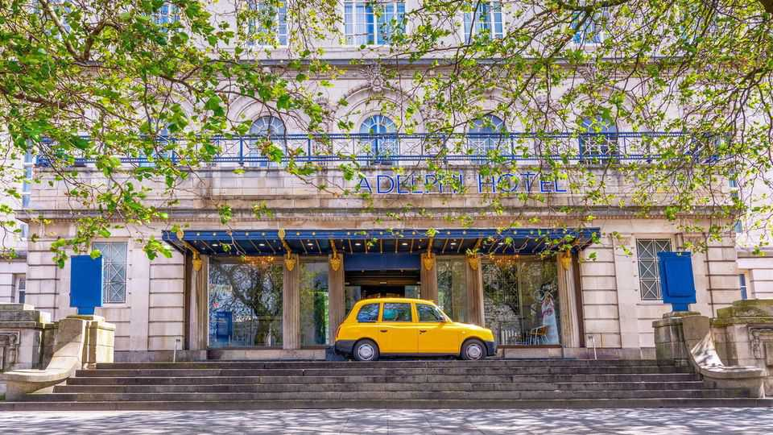

Britain’s least-loved hotel chain is finally splashing the cash
New management, and the loss of government business, bring a change of strategy

Oct 22nd 2026
The Adelphi Hotel, an Edwardian pile in Liverpool, has hosted everyone from Winston Churchill to Roy Rogers and his horse Trigger. Among Britain’s most luxurious hotels when it opened in 1914, it boasted Turkish baths, a heated indoor pool and shooting galleries. Charles Dickens described his dinner at an earlier incarnation as “undeniably perfect”. Today the pool and spa are closed, the shooting gallery is inoperative and your correspondent’s £14.95 ($19.80) supper was scraped from a tepid buffet shortly before it closed at 8pm. The Adelphi ranks 105th of 112 Liverpool hotels on TripAdvisor.
It belongs to Britannia Hotels, Britain’s largest privately owned hotel chain, with 64 hotels and over 10,000 rooms. Britannia has finished last in 12 consecutive surveys of big hotel chains by Which? magazine. Yet many of those years coincided with healthy profits. Now Britannia is changing course. Its 88-year-old founder, Alex Langsam, has stepped back and a four-person management board plans “immediate and rolling upgrades” to rejuvenate its hotels and reputation. Why the shift?
It is a tricky time for British hotels. Wages, business rates and energy costs are rising—and customers are increasingly value-conscious. Britannia is positioned as a budget operator, with an average room price (£84 in 2025, according to Which?) higher than Travelodge’s (£69) but lower than Premier Inn’s (£94). Those chains offer consistency in standardised hotels, many purpose-built and leased. Britannia has an owner-operator model. Under Mr Langsam it accumulated an eclectic estate of grand old buildings. He once described his company as merely the “custodians for a period of time” of such heritage assets.
For years its expanding estate delivered erratic returns. Then its fortunes improved. Pre-tax profits averaged nearly £20m in the three years before covid-19, despite dismal survey ratings. This coincided with an important new customer: the government. Hoteliers could earn “much more” from housing asylum-seekers, says Philippa Goldstein of Knight Frank, a consultancy. Government spending on asylum hotels surged to more than £2bn a year after covid. Britannia’s pre-tax profits hit a record £39m in 2023; reports suggested that at least 17 of its hotels were block-booked on the government’s behalf. But as the number of asylum-seekers in hotels has fallen from over 56,000 to around 16,000, its annual profits have dipped to £27m.
One hotel, Daresbury Park (“located just off Junction 11 of the M56”), featured prominently in the 2025 Runcorn and Helsby by-election. During the campaign the Home Office announced that its asylum contract would end; the anti-immigration Reform UK won by six votes anyway. Since then Britannia has given the hotel a multi-million-pound glow-up.
On a recent visit, an £84 room was smart and the evening bar lively, especially for an out-of-town business park in Cheshire. Britannia calls Daresbury Park a “prime example” of what its investment can achieve. The hope is that its refurbished hotels will attract more paying customers as government contracts recede.
That is a work in progress. Back at the Adelphi, a dated bedroom came with a pristine new bathroom, although the shower prevented the door opening beyond half way. Several coach parties of older guests added to the throwback atmosphere. For Britannia preserves something besides old buildings: a tradition of communal British holiday-making. At coastal properties this year Britannia introduced a seaside-entertainment programme, with bingo, quizzes and live shows.
Some of Britain’s most high-profile old buildings have recently been repurposed as luxury hotels under international hospitality groups. In London the Old War Office is now a Raffles hotel; Admiralty Arch’s conversion into a Waldorf Astoria is nearly complete. Both are advertising rooms at upwards of £800 a night. A stay at the Adelphi, a Liverpool landmark owned by a British company, set The Economist back £53.40. As Mr Langsam once put it: “Our extraordinary buildings are enjoyed by ordinary people.”■